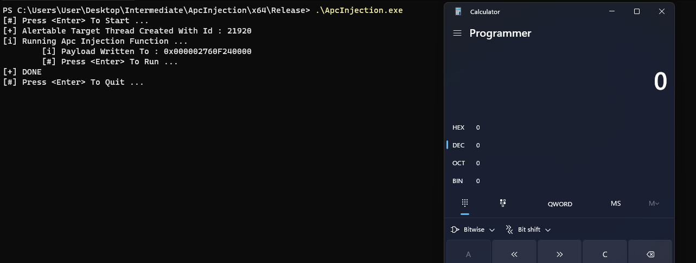
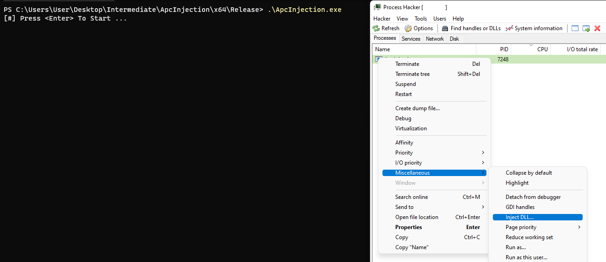
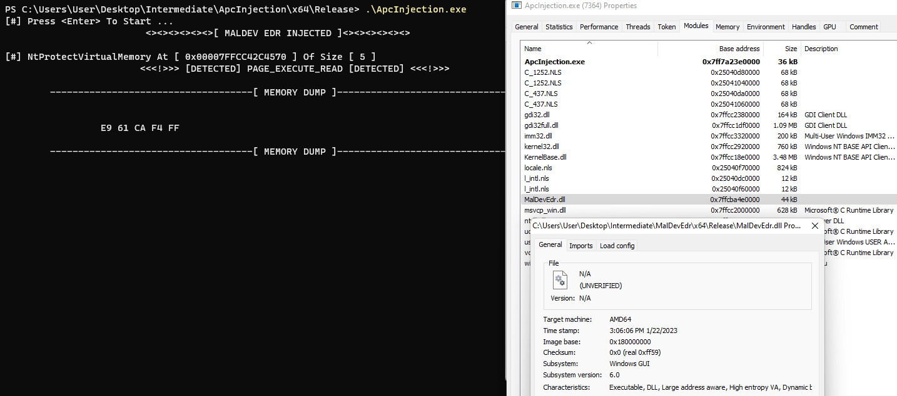
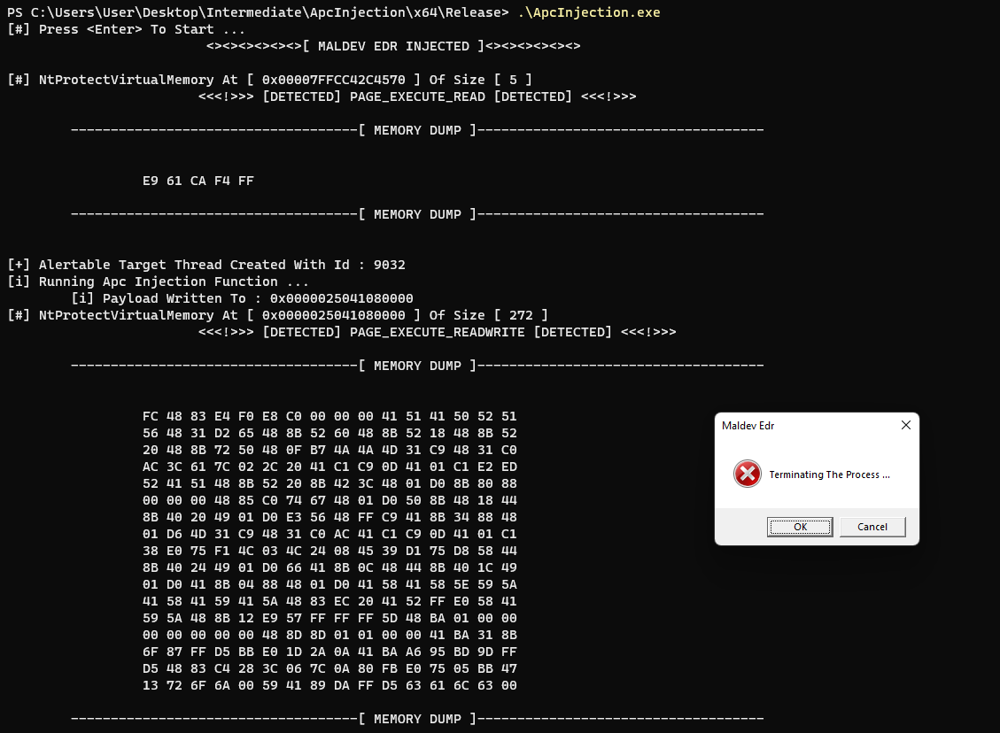
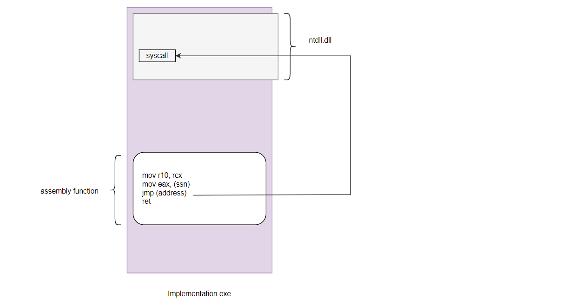
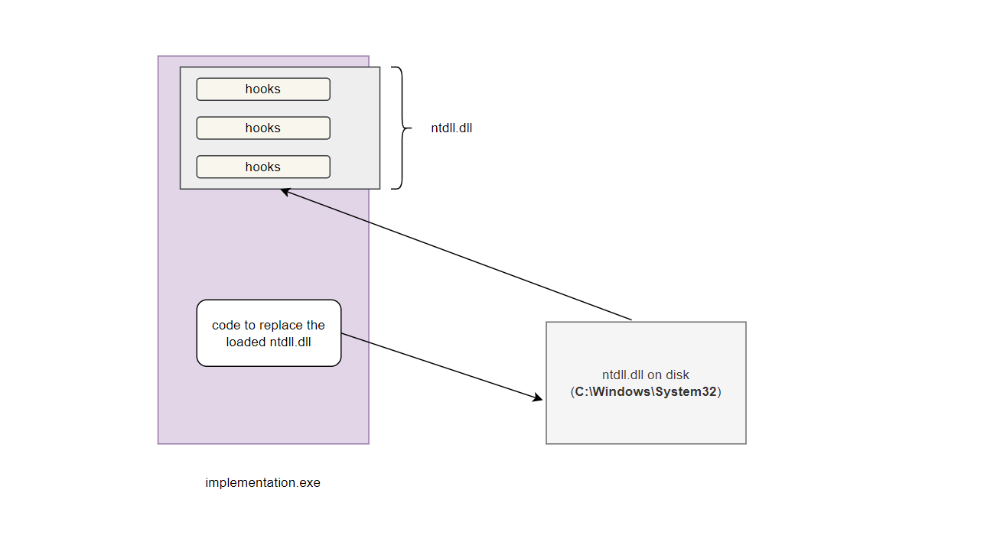

Introduction
Host-based security solutions frequently perform API hooking on syscalls to enable analysis and monitoring of programs at runtime. For instance, by hooking the NtProtectVirtualMemory syscall, the security solution can detect higher-level WinAPI calls such as VirtualProtect, even when it is concealed from the import address table of the binary. Furthermore, security solutions can access any memory region that is set to executable and scan it in search of signatures. Userland hooks are generally installed before the syscall instruction, which is the last step for a syscall function in user mode.
Kernel mode hooks can be implemented post-execution, after the flow is transferred to the kernel, however, Windows Patch Guard and other mitigations make it difficult for third-party applications to patch kernel memory, making the task difficult if not impossible. Placing kernel mode hooks may also result in stability implications and cause unexpected behavior, which is why it is rarely implemented.
Showcasing Userland Hooking
This section utilizes a DLL file which, when injected into a process, will use the Minhook Library to install a hook on NtProtectVirtualMemory in order to gain insight into the operations of EDRs about syscall hooking. The hook installed is equipped with the capability of dumping the memory's contents if it is set to be executable (RX or RWX). Furthermore, the process will be terminated if a RWX memory region is detected.
The DLL source code is available for download for testing purposes. It is not necessary to understand the code at this time, however, it contains extensive comments to make it easier to understand.
EDR Hooking Demonstration
This section demonstrates how an EDR can block the execution of a certain payload using syscall hooking. The APC Injection code will be the malicious binary in this demo.
1.Running the program without hooking NtProtectVirtualMemory.

2.Injecting MalDevEdr.dll into ApcInjection.exe using Process Hacker

3.The DLL is injected, and it detects RX (this is related to the DLL injection)

4.Pressing the Enter key on the ApcInjection.exe console, triggers a call to NtProtectVirtualMemory, setting 0x0000025041080000 as RWX memory, this address is then dumped by the DLL to the screen. The content that was dumped is the Msfvenom calc payload.

Explanation
When ApcInjection.exe uses VirtualProtect with a PAGE_EXECUTE_READWRITE argument, it's intercepted by MalDevEdr.dll. MalDevEdr.dll will use the base address passed to VirtualProtect to dump the contents of that memory region. Since the memory region is being changed to RWX, MalDevEdr.dll terminates the program and blocks the payload from being executed, which is something Windows Defender Antivirus was not able to do.
This proof of concept demonstrates the power of API hooking in detecting and monitoring a program at runtime. In real-world scenarios, EDRs will typically hook a wider range of syscalls, enhancing their ability to detect malicious actions.
Bypassing Userland Syscall Hooks
Using syscalls directly is one method of bypassing userland hooks. For example, using NtAllocateVirtualMemory instead of the VirtualAlloc/Ex WinAPIs when allocating memory for the payload. There are other several ways that syscalls can be called stealthily:
Direct Syscalls
Evasion of userland syscall hooking can be achieved by obtaining a version of the syscall function coded in the assembly language and calling that crafted syscall directly from within the assembly file. The challenge lies in determining the syscall service number (SSN), as this number varies from one system to another. To overcome this, the SSN can be either hard-coded in the assembly file or calculated dynamically during runtime. A sample crafted syscall in an assembly file (.asm) is presented below.
Rather than calling NtAllocateVirtualMemory with GetProcAddress and GetModuleHandle as previously done in this handbook, the assembly function below can be utilized for the same result. This eliminates the need to call NtAllocateVirtualMemory from within the NTDLL address space where hooks are installed, thereby avoiding the hooks.
NtAllocateVirtualMemory PROC
mov r10, rcx
mov eax, (ssn of NtAllocateVirtualMemory)
syscall
ret
NtAllocateVirtualMemory ENDP
NtProtectVirtualMemory PROC
mov r10, rcx
mov eax, (ssn of NtProtectVirtualMemory)
syscall
ret
NtProtectVirtualMemory ENDP
// other syscalls ...This method is utilized in tools such as SysWhispers and HellsGate both of which are discussed in upcoming modules.
Indirect Syscalls
Indirect syscalls are implemented similarly to direct syscalls where the assembly files must be manually crafted first. The distinction lies in the absence of the syscall instruction within the assembly function, which is instead jumped to. A visual representation is shown below.

The assembly functions for NtAllocateVirtualMemory and NtProtectVirtualMemory are shown below.
NtAllocateVirtualMemory PROC
mov r10, rcx
mov eax, (ssn of NtAllocateVirtualMemory)
jmp (address of a syscall instruction)
ret
NtAllocateVirtualMemory ENDP
NtProtectVirtualMemory PROC
mov r10, rcx
mov eax, (ssn of NtProtectVirtualMemory)
jmp (address of a syscall instruction)
ret
NtProtectVirtualMemory ENDP
// other syscalls ...Indirect Syscalls Benefit
The benefit of performing indirect syscalls over direct syscalls is that security solutions will look for syscalls being called from outside of the NTDLL address space and consider them suspicious. With indirect syscalls, the syscall instruction is being executed from NTDLL's address space as how normal syscalls should be. Therefore, indirect syscalls are more likely to slip past security solutions than direct syscalls.
Indirect syscalls will be covered in the advanced modules.
Unhooking
Unhooking is another approach to evade hooks in which the hooked NTDLL library loaded in memory is replaced with an unhooked version. The unhooked version can be obtained from several places, but one of the common approaches is to load it directly from disk. Doing so will remove all the hooks placed inside the NTDLL library.

Unhooking will be covered in the advanced modules.